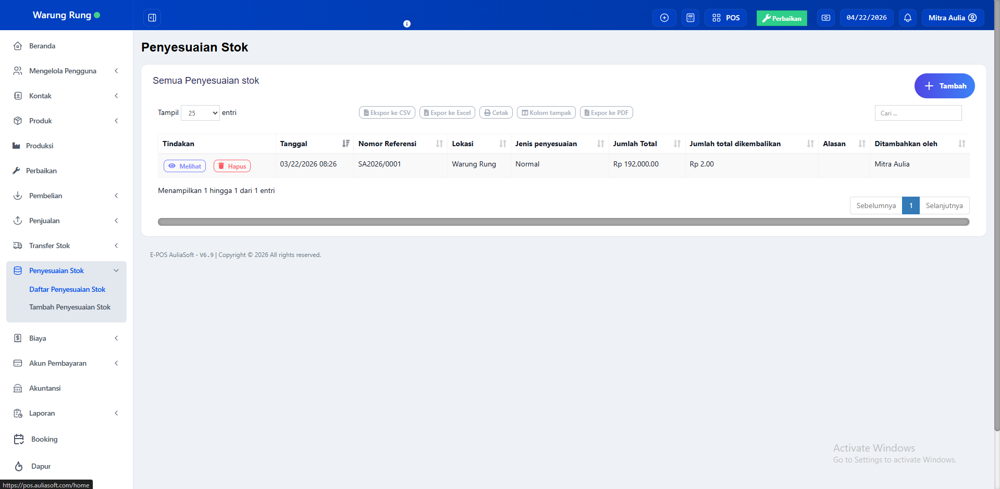
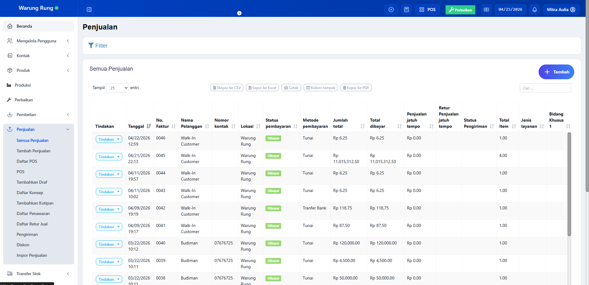
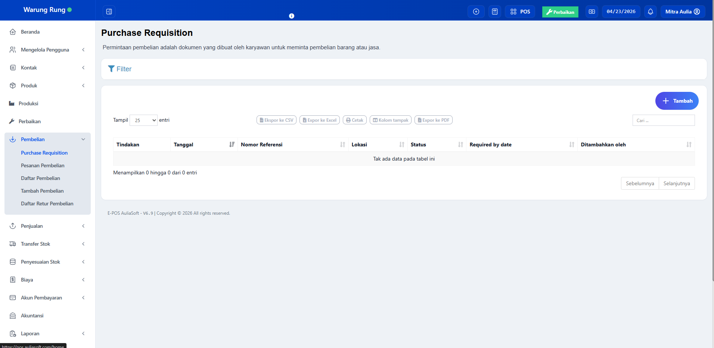
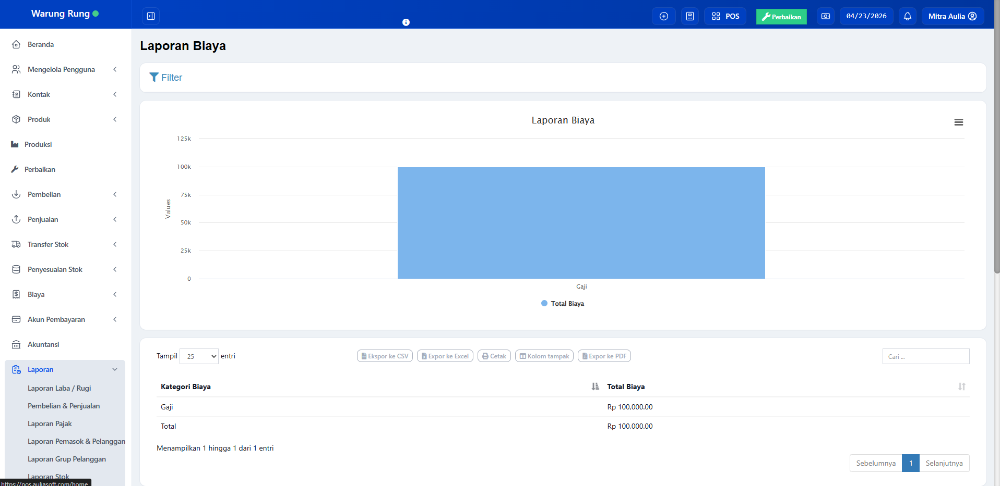
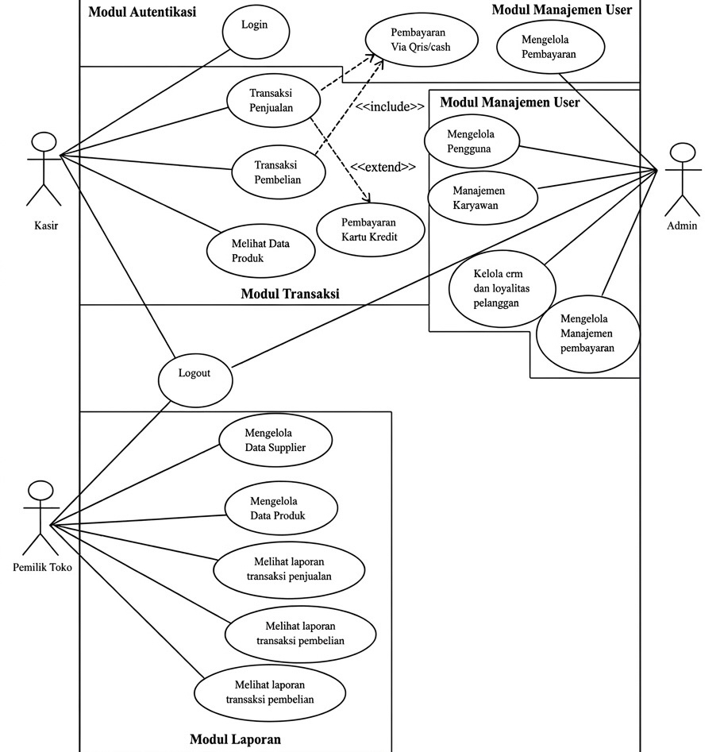
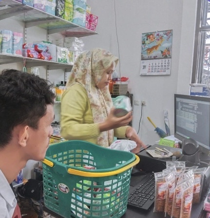
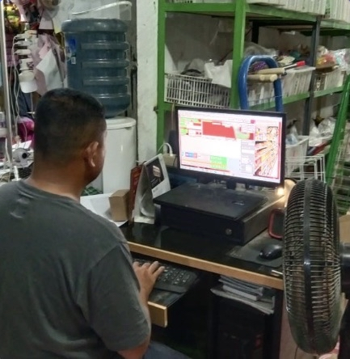
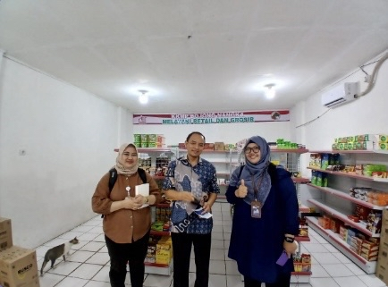

Solusi Kasir Digital untuk Bisnis Lebih Efisien
Pantau penjualan, atur stok, dan analisa performa usaha dalam satu sistem yang simpel, cepat, dan praktis digunakan.



Pantau penjualan, atur stok, dan analisa performa usaha dalam satu sistem yang simpel, cepat, dan praktis digunakan.

AuliaSoft POS hadir sebagai solusi sistem kasir terintegrasi berbasis hybrid (offline & cloud) yang dirancang untuk mengoptimalkan pengelolaan transaksi, inventaris stok, serta pelaporan bisnis. Dengan sistem yang terstruktur, perangkat lunak ini memungkinkan pelaku UMKM dan bisnis berkembang untuk meningkatkan efisiensi operasional dan mendukung pengambilan keputusan yang berbasis data secara akurat.
Dirancang untuk pelaku UMKM dan bisnis berkembang agar operasional lebih efisien dan pengambilan keputusan menjadi lebih tepat.
Pengelolaan tanpa sistem sering menyebabkan ketidakefisienan dan berisiko menimbulkan kesalahan dalam operasional bisnis.
Transaksi sering tidak tercatat dengan baik dan sulit dilacak kembali.
Kesalahan jumlah barang sering terjadi karena tidak ada sistem monitoring.
Proses rekap data memakan waktu dan rentan kesalahan manusia.
Aktivitas karyawan sulit dipantau sehingga rawan kesalahan transaksi.
Kelola transaksi, stok, dan laporan dalam satu platform yang dirancang untuk meningkatkan efisiensi operasional usaha.
Mempercepat pelayanan tanpa langkah yang rumit.
Perubahan barang langsung tercatat secara otomatis.
Data penjualan bisa diakses kapan saja dengan cepat.
Semua aktivitas usaha terlihat dalam satu tampilan.
Dirancang untuk membantu operasional bisnis jadi lebih terstruktur, efisien, dan mudah dikontrol.
| Multi Jenis Usaha | Bisa digunakan untuk retail, UMKM, F&B, hingga jasa. | |
| Transaksi Cepat | Proses penjualan lebih efisien dan mudah digunakan. | |
| Manajemen Stok | Pemantauan barang lebih akurat dan real-time. | |
| Laporan Otomatis | Data bisnis tersusun rapi dan siap dianalisis kapan saja. | |
| Mode Hybrid | Tetap berjalan saat offline dan sinkron saat online. | |
| Keamanan Data | Data tersimpan dengan aman dan mudah diakses. | |
| Dashboard Terpusat | Semua fitur tersedia dalam satu tampilan. | |
| Harga Fleksibel | Menyesuaikan kebutuhan bisnis kecil hingga berkembang. | |
| Layanan Support | Tim siap membantu untuk memastikan sistem berjalan lancar. |
Pilih paket terbaik sesuai kebutuhan bisnis Anda
Paket hemat untuk usaha mikro
Solusi awal untuk usaha kecil
Paket lengkap untuk bisnis berkembang
Solusi full untuk bisnis skala besar
Solusi teknologi modern untuk mendukung operasional bisnis ritel yang lebih efisien dan terintegrasi.
AuliaSoft (PT Mitra Aulia Indonesia) merupakan perusahaan teknologi yang bergerak di bidang pengembangan aplikasi kasir (Point of Sales/POS) serta sistem manajemen ritel terintegrasi. Perusahaan ini menghadirkan solusi digital yang menghubungkan operasional toko secara offline dengan ekosistem bisnis online dalam satu platform.
Sistem yang dikembangkan dirancang untuk membantu pelaku usaha dalam mengelola transaksi penjualan, memantau stok barang secara real-time, serta meningkatkan efisiensi operasional melalui otomatisasi proses bisnis.
Dengan pendekatan berbasis teknologi, AuliaSoft berkomitmen untuk mendukung pertumbuhan bisnis, mulai dari skala kecil hingga menengah, agar dapat berkembang secara lebih modern, terstruktur, dan kompetitif.
Fokus pada fitur inti untuk mengelola bisnis dengan lebih efisien.
|
Penjualan
Transaksi berlangsung cepat dengan pencatatan otomatis.
|
 |
|
|
Pembelian
Pencatatan pembelian dari supplier jadi lebih lengkap.
|
 |
|
|
Laporan Keuangan
Laporan keuangan tersusun otomatis dan mudah dibaca.
|
 |
Lihat peningkatan fitur dari Basic hingga Premium untuk mendukung skala bisnis Anda.
Fitur dasar untuk operasional usaha seperti kasir, toko online, manajemen stok, dan laporan sederhana untuk memulai bisnis.
Upgrade ke sistem yang lebih lengkap dengan multi outlet, CRM, akuntansi, serta analitik bisnis untuk membantu pengambilan keputusan yang lebih tepat.
Solusi menyeluruh untuk bisnis skala besar dengan fitur omnichannel, payroll, integrasi sistem, dan manajemen operasional yang lebih kompleks.
Sistem dapat disesuaikan agar selaras dengan proses kerja dan identitas usaha Anda.
Tampilan sistem dapat mengikuti identitas bisnis seperti logo, warna brand, nama usaha, hingga format struk penjualan.
Role pengguna dapat diatur sesuai posisi seperti kasir, admin, owner, maupun staff lainnya.
Tampilan invoice dan struk bisa disesuaikan dengan standar dan kebutuhan masing-masing usaha.
Sistem mampu mengikuti berbagai model operasional seperti retail, restoran, koperasi, hingga bisnis multi cabang.
Laporan dapat disesuaikan mulai dari penjualan, pembelian, stok, hingga laporan khusus sesuai kebutuhan manajemen.
Mendukung koneksi dengan berbagai perangkat dan layanan seperti printer kasir, barcode scanner, QRIS, hingga marketplace.
AuliaSoft POS dibuat agar dapat menyesuaikan kebutuhan bisnis, bukan sebaliknya. Setiap fitur dapat diatur agar sesuai dengan cara kerja usaha Anda.
Gambaran bagaimana sistem digunakan dalam aktivitas bisnis sehari-hari.

Sistem digunakan untuk mengelola aktivitas toko secara terhubung, baik penjualan langsung maupun transaksi pembelian barang. Seluruh proses berjalan dalam satu platform yang saling terintegrasi.
Setiap transaksi langsung tersambung dengan metode pembayaran, mulai dari tunai, QRIS, hingga kartu. Kasir juga dapat memastikan data produk tetap akurat sebelum menyelesaikan sesi kerja.
Admin bertugas mengatur seluruh kebutuhan operasional, termasuk data pengguna, struktur karyawan, serta pembagian hak akses.
Selain itu, pengelolaan sistem pembayaran, hubungan pelanggan, dan program loyalitas juga dikendalikan untuk menjaga kualitas layanan.
Pemilik usaha berfokus pada pengawasan dan pengambilan keputusan, termasuk pengelolaan supplier serta data produk utama.
Informasi dari laporan penjualan dan pembelian dimanfaatkan untuk mengevaluasi performa bisnis dan menentukan langkah selanjutnya.
AuliaSoft POS berada di berbagai segmen software bisnis dengan kompetitor yang beragam.
Bersaing dengan solusi kasir digital seperti Moka POS, Majoo, Olsera, Pawoon, Kasir Pintar, hingga iSeller yang fokus pada kebutuhan usaha kecil hingga menengah.
Kompetisi datang dari software koperasi lokal, sistem custom, serta solusi ERP keuangan yang dirancang khusus untuk koperasi.
Berhadapan dengan aplikasi PMS, sistem reservasi, dan tools manajemen booking yang digunakan di industri hospitality.
Kompetitor mencakup aplikasi kasir berbasis desktop seperti iPOS, Omega POS, dan software Windows lainnya yang berjalan tanpa internet.
AuliaSoft hadir dengan pendekatan fleksibel yang menggabungkan berbagai kebutuhan bisnis dalam satu sistem.
Berbagai layanan dan perangkat tambahan yang melengkapi penggunaan AuliaSoft POS.
AuliaSoft menghadirkan sistem yang terhubung dengan berbagai layanan pendukung, mulai dari perangkat, platform online, hingga fitur digital lainnya.
Mendukung penggunaan printer struk, scanner barcode, cash drawer, serta perangkat komputer untuk operasional.
Pemilik usaha dapat memonitor performa bisnis, penjualan, stok, hingga laporan secara real-time melalui web.
Sistem e-commerce terintegrasi untuk mengelola penjualan online, checkout, serta status pesanan pelanggan.
Mendukung transaksi non-tunai seperti QRIS, transfer bank, kartu debit, dan metode digital lainnya.
Fitur pengelolaan pelanggan seperti member, poin reward, serta program loyalitas.
Tersedia bantuan teknis, layanan WhatsApp, serta dukungan penggunaan dalam periode tertentu.
Struktur kerja dan aturan penggunaan yang menjaga operasional tetap terkontrol.
Kasir memproses pembelian dengan memilih produk dan metode bayar, kemudian sistem otomatis mencatat transaksi serta mengurangi stok.
Data barang masuk dari supplier dicatat untuk menambah stok sekaligus menjadi referensi histori pembelian.
Sistem menangani keluar-masuk barang, perpindahan stok, hingga penyesuaian agar data tetap sesuai kondisi aktual.
Hak akses diatur berdasarkan peran seperti kasir, admin, atau pemilik agar penggunaan sistem lebih terarah.
Data bisnis ditampilkan dalam bentuk laporan untuk membantu evaluasi serta pengambilan keputusan.
AuliaSoft menerapkan pengelolaan data yang terstruktur untuk menjaga keamanan dan konsistensi informasi bisnis.
Beberapa informasi penting seputar penggunaan AuliaSoft POS
Cerita nyata dari pengguna AuliaSoft POS

Peralihan dari sistem manual ke digital jadi lebih mudah, fitur lengkap dan support sangat membantu operasional.

Pengelolaan laporan keuangan kini lebih rapi dan efisien untuk kebutuhan operasional harian.

Membantu aktivitas toko berjalan lebih lancar, ditambah support yang cepat dan responsif.

Stok barang dan laporan penjualan jadi lebih mudah untuk dipantau setiap saat.

Sistem membantu meningkatkan kontrol dan manajemen operasional toko kami.

Fitur lengkap dan pelayanan yang diberikan sangat memuaskan.

Sistem mudah digunakan dan terintegrasi dengan kebutuhan usaha.
Gunakan AuliaSoft POS untuk mengatur transaksi, stok barang, dan laporan bisnis dengan lebih cepat, rapi, dan efisien.